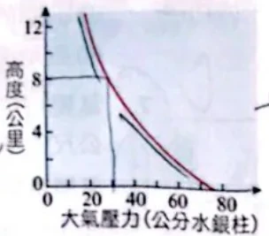

附圖為大氣壓力與離地高度的關係圖，下列有關氣壓的敘述，何者錯誤？

(A) 利用氣壓與高度的相關性，氣壓計也可以作為高度計 (B) 地面的氣壓相當於高約 76 公分水銀柱底面承受的壓力 (C) 離地面 8 公里處的高空氣壓，大致已小於 0.5 大氣壓 (D) 距地面愈高，其氣壓隨高度的變化率愈來愈大
看答案與詳解收起
答D。
解
- (A) 對：氣壓與高度一一對應，飛機、登山錶就是用氣壓推高度。
- (B) 對：1 大氣壓＝76 cmHg。
- (C) 對：圖上 8 公里處約 27 cmHg，小於 0.5 大氣壓（38 cmHg）。
- (D) 錯：曲線愈往上愈「立起來」，同樣上升 1 公里，氣壓減少得愈來愈少 → 變化率愈來愈小（高空空氣稀薄）。
小結
低空氣壓降得快、高空降得慢。